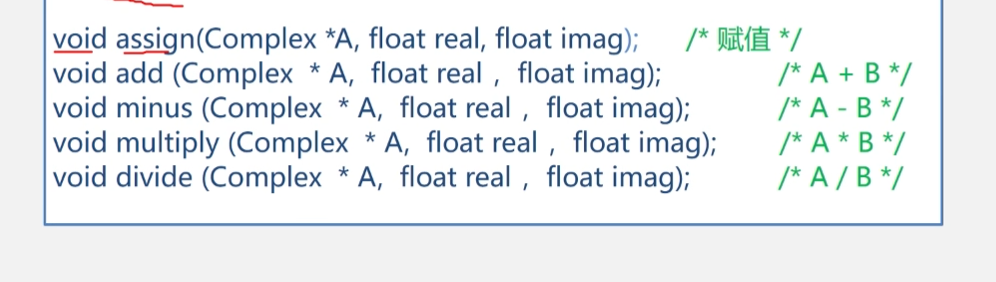

路径用于指定图片、样式表或网页等文件的位置。常见路径分为相对路径和绝对路径。
考研学习笔记/
├── 1.计算机网络体系结构.md
├── 2.计算机组成 原理 王道版.md
├── 3.数据结构.md
├── 笔记图片/ ← Markdown 笔记的图片
│ └── image-3.png
└── 项目学习/
├── 6图像标签及格式.html
├── 7.路径分类.html
└── img/ ← 项目学习自己的图片
├── image-3.png
└── HTML文档结构关系图 马会.png
相对路径以当前文件所在的文件夹为起点。./ 表示当前目录，../ 表示上一级目录。
6图像标签及格式.html。img/image-3.png，访问项目自己的图片。../1.计算机网络体系结构.md，定位根目录的笔记文件。<img src="img/image-3.png" alt="项目学习示例图片">
根目录的 Markdown 笔记引用自己的图片时，写成：
绝对路径提供完整位置，例如本机文件地址 file:///C:/Users/chengling/Desktop/考研学习笔记/项目学习/img/image-3.png，或完整网络地址 https://example.com/images/photo.jpg。
本机绝对路径依赖电脑上的具体位置，移动文件夹或换电脑后可能失效。本项目内部使用相对路径，整体移动文件夹时更方便。